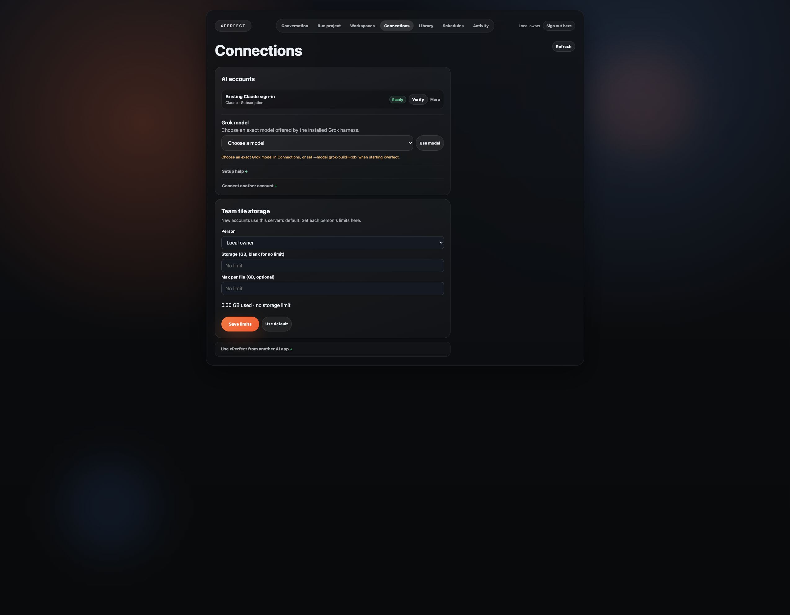
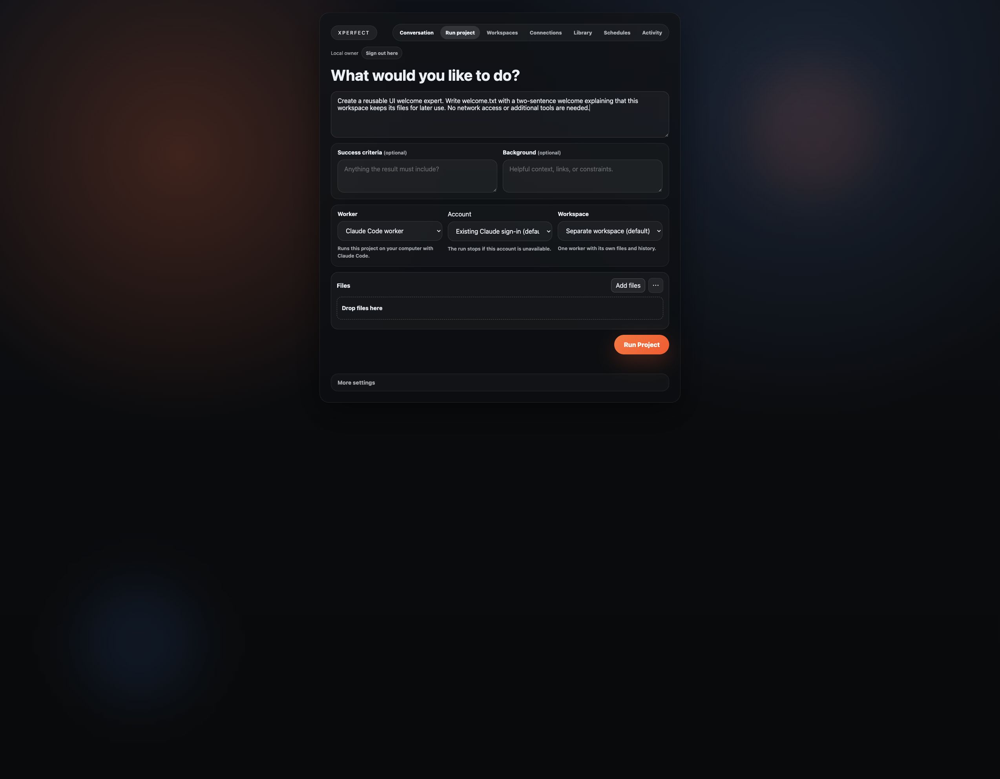
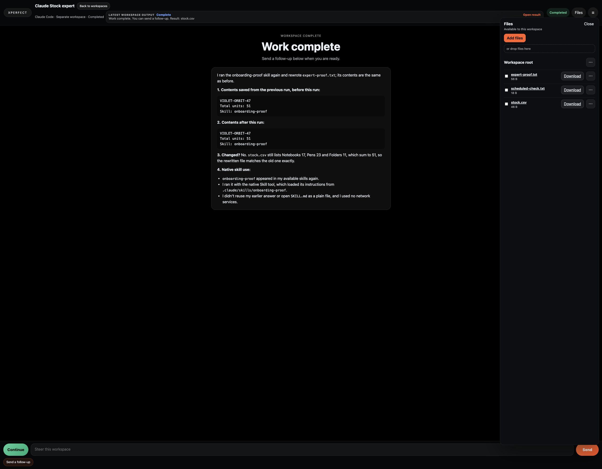
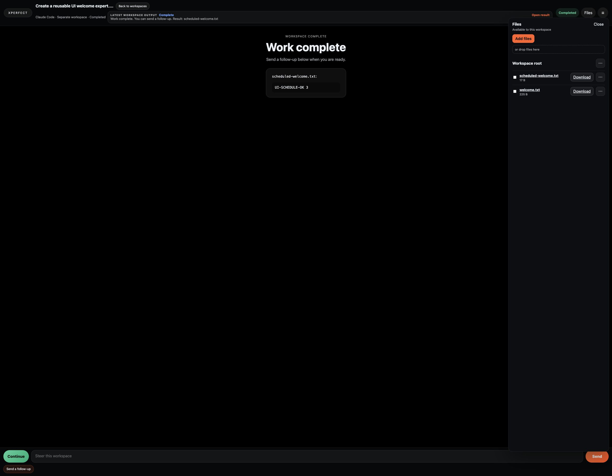

Apple Silicon Mac
Use Python 3.11+ and Docker Desktop. The package produced a real expert result and kept files and account access after restart.
Run xPerfect. Connect your AI. Give an expert its files and skills. Come back to the same workspace—from the app, Codex or Claude.
A workspace keeps the files. A worker is the AI that uses them. xPerfect lets you keep and reuse both.
Use Python 3.11+ and Docker Desktop. The package produced a real expert result and kept files and account access after restart.
Use Python 3.11+ and Docker on an Arm Linux host. The same package route produced a real native expert result. Hosted access needs its separate secure setup.
These platforms are deferred. Docker/WSL is the shared design, but the published images currently support linux/arm64 only.
Download the public source ↓. Open Terminal in the extracted folder. You do not need a GitHub account.
First install Python 3.11 or newer and Docker. Keep Docker running.
./xperfect start --dockerxPerfect downloads its saved release images and starts the app. You do not need to find image names or IDs.
Use the app address printed in Terminal, normally http://127.0.0.1:8780. Open the private credentials file it names, normally ~/xperfect-local/credentials.json. Enter its ui_password and select Unlock. Save that file privately; it also holds your MCP key.
./xperfect start --docker --name xperfect-demo \
--state-dir ~/xperfect-demo --ui-port 18780 --mcp-port 18767Use the addresses and credentials file printed for that instance. Its MCP address is separate from its app address. Never start two instances against the same state.
For macOS or Linux development, install uv and your chosen Claude Code or Codex client, then use ./xperfect start. This host route has its own state and MCP setup; do not use its stdio recipe for a Docker instance.
The shared Linux package is verified. A remote, multi-user service still needs TLS, human sign-in, tenant isolation and persistent storage. Follow the hosted deployment guide; opening a local port to the Internet is not a hosted setup.
Ready means connected. Your first completed task proves it can do the work.

Use your intended account and exact model. The current package records gpt-6.1-sol for Codex and claude-opus-5-5 for Claude. An explicit choice takes precedence; no silent switch. A native host Codex worker without an explicit model uses its account default. Provider sign-in and genuine access confirmations remain yours. Host workers have your OS permissions; container workers use isolated workspaces. Your AI provider receives the task content needed for its work.
Use the interface directly, or connect your own Codex / Claude Code client once. Both control the same saved workspaces.
export XPERFECT_MCP_TOKEN="$(python3 -c 'import json,pathlib; print(json.loads((pathlib.Path.home()/"xperfect-local/credentials.json").read_text())["mcp_api_key"])')"This reads your key without printing it or putting its value in shell history. Use your instance's actual credentials path if different. Do not paste the key into chat, a URL or a repository.
mcp_url from the credentials file if you changed ports. Repeat the key-loading step when you open a new Terminal session.Create a reusable Stock expert. Use the files and skill I attach. Save your result as expert-proof.txt.

For the Docker package, first load the private key as shown above. Then:
codex mcp add xperfect --url http://127.0.0.1:8767/mcp \
--bearer-token-env-var XPERFECT_MCP_TOKEN
codexIf xPerfect is already configured, reuse that connection. Ask your client:
Use xPerfect to list my workspaces. Create a reusable Stock expert with my selected connected account. Add my files and skill inside its native harness. Run it and return the saved result, workspace ID and View link so I can use it again.
For the Docker package, first load the private key as shown above. Then:
claude mcp add-json --scope user xperfect '{"type":"http","url":"http://127.0.0.1:8767/mcp","headers":{"Authorization":"Bearer ${XPERFECT_MCP_TOKEN}"}}'
claudeThe configuration keeps the variable name, not the key value. If xPerfect is already configured, reuse that connection. Ask your client:
Use xPerfect to list my workspaces. Create a reusable Stock expert with my selected connected account. Add my files and skill inside its native harness. Run it and return the saved result, workspace ID and View link so I can use it again.
On ./xperfect start, open Connections → Use xPerfect from another AI app and use the command for your client and state directory. The local stdio commands are:
codex mcp add xperfect -- /absolute/path/to/xPerfect/xperfect mcp
claude mcp add xperfect -- /absolute/path/to/xPerfect/xperfect mcpRun only your chosen client's command. For custom host state, append --state-dir /absolute/path/to/state after mcp. Use a distinct connection name if you keep both host and container instances.
The Docker package's Automatic setup card is currently unconfigured. Use the supported private bearer recipe above; the Manual panel now shows the correct separate MCP address. The host launcher's local setup was verified separately.
Account sign-in authorizes the provider account. Your controlling AI client can still ask to trust an MCP server or approve a tool under its own settings. Keep those real security boundaries; ordinary expert copies and schedules retain the ready account.
SKILL.md with a name, description and instructions.“Install this skill into your harness's normal skill folder. Keep these inputs and use the skill for future requests.”
One skill and one CSV. The skill contains a hidden test phrase and asks for a stock total. The request itself does not reveal the phrase.
Download plain skill ↓Claude uses .claude/skills/; Codex uses .agents/skills/. Let the worker use its harness. Do not add a custom router, plugin service or phrase-matching code.
Schedule this xPerfect workspace to run the installed onboarding-proof skill once in five minutes. Tell me when it is due, then show the completed run and saved file.
Keep xPerfect and the computer running. If the chosen account is busy, work may wait. For a recurring job, verify one real due run before relying on it.
Open Workspaces, find your expert, and open it. Use Steer for the next request. Reopen Files to check the saved result.
Use More → Duplicate to copy ordinary files and installed native skills. The copy keeps the same ready personal AI account; credentials, private harness sessions and run history are not copied. If that account is no longer ready, choose an account again.
“Find my Stock expert in xPerfect. Ask it to summarize this new file. Keep using the same workspace.”
The client discovers the actual tools. Save the worker/workspace ID rather than inventing a new endpoint for each expert.
The repository already includes skills/connect-glasshive/SKILL.md. Its name stays for compatibility. It is guidance for the native client, not another service.
Install this existing skill in your controlling client’s normal skill folder: .agents/skills/connect-glasshive/SKILL.md for Codex or .claude/skills/connect-glasshive/SKILL.md for Claude Code. Use the published skill. Connect MCP once using the appropriate recipe, then say “xPerfect this: create a reusable Stock expert with these files and this skill.” The native client chooses the tools; no extra service is needed.
Use the existing control plane: create a saved expert with workspace_launch and favorite=true, then find, message, copy, schedule or retrieve its files. Put ordinary files and native skill folders inside its workspace. Local Docker MCP uses the private bearer key; host stdio uses the current OS identity. Hosted clients use the service’s registered human sign-in.
workspace_list
workspace_launch
workspace_schedule
workspace_wait
worker_message
workspace_status
workspace_artifacts
workspace_duplicate
The direct local API is separate from the UI: by default 127.0.0.1:8766. Use its private API token in the Authorization header, never a URL. Docker packages keep that runtime API private; use their exposed authenticated MCP.
A saved expert launch (favorite=true) works from a plain connected MCP client. Only a fresh one-off launch without favorite requires an integrated host’s trusted source identity. Use reuse_existing_workspace=true for the same expert by exact name. See the API and client examples.
Updated 29 September 2026 against published package 91f3120. The release manifest records the exact images. Earlier valid user-path proof is retained; a package startup is not a new test of every model.
| User path | Verified result / limit |
|---|---|
| Download and start | Public source and images downloaded without GitHub sign-in. One ./xperfect start --docker command passed on a fresh Arm runner; actual startup took 76 seconds in that recorded environment, not a timing promise. |
| Mac and Linux | Mac package and real Arm Linux/hosted native results passed, with saved files and account continuity after restart. The final package's app unlock, reload and authenticated MCP passed. Windows and x86-64 remain deferred. |
| Connect and run | Selected Claude Opus 5.5 and Codex subscription routes produced native results. Final native image uses official Codex client 0.159.0; its explicit gpt-6.1-sol route passed on the same authorized account. Earlier Mac proof used gpt-6-sol. No universal account-entitlement claim. |
| Keep, copy and reuse | UI and isolated Codex/Claude clients created, found, copied and reused saved experts. Copies retained native skills and ordinary files, with the same ready account. Results survived reload and fresh client reconnect. |
| Files and skills | Direct browser upload and authenticated API transfer supplied real binary files. Native workers read them and saved useful output; downloaded input/output bytes matched. Both Claude and Codex used their ordinary native skill folders. |
| Schedule | UI, Claude MCP and Codex MCP one-time schedules ran at their actual due times. Name/alias scheduling retained the saved expert and account. Recurring schedules are supported but not a separate recurring-cycle proof here. |
| MCP and API | Separate real clients performed expert lifecycles. Authenticated API invocation returned a persisted result from the same expert. Docker Manual MCP now shows its separate port; Automatic container setup remains unconfigured, so use the private bearer recipe. |
| Model coverage | claude-opus-5-5 and explicit gpt-6.1-sol have actual native result evidence. grok-4.7 was verified as a model ID, without a new run. Choose an account and model your provider supports; no silent substitution. |


Use the verified routes above. Additional platforms and automatic container client setup remain explicit limits. The final shared native image is the same tested binary; the earlier hosted expert was preserved on its diagnostic service rather than overwritten. Hosted setup still requires its own identity and TLS configuration.
| You see | Do this |
|---|---|
| No ready account | Connect the account for the selected worker. Wait for Ready, then run one small task. |
| Queued / account busy | Check the active workspace. Let it finish; do not launch copies to force progress. |
| Approval required | Read the exact provider, client or sharing request. Approve only the intended access as its owner. Ordinary use of an already authorized ready account does not need a new routine account grant; never switch identities to bypass a refusal. |
| Missing result | Check Watch and Files. A completed model answer and a downloadable artifact are different evidence. |
| Docker network error | Read Docker’s reported cause. For exhausted address pools, use unused network ranges as described in the package guide. Do not prune personal volumes or repeat an unchanged failed launch. |
| App restarted | Use the same state directory. Reopen the workspace and verify files before resubmitting work. |
After Docker or the computer restarts, start your saved package:
docker start xperfect-local-runtime xperfect-local-ui xperfect-local-mcpUse your package name if you changed it. Files, account state and the unlock password stay in its existing volumes. Check Watch and Files before resubmitting uncertain work. For a supported update or restore, follow the deployment guide; never replace saved state as a retry.
Source references: xPerfect public source · Codex MCP · Claude MCP. Guide source and maintenance. Instructions describe the current published package and the dated verified paths above. Product changes require only their affected proof before these claims change.